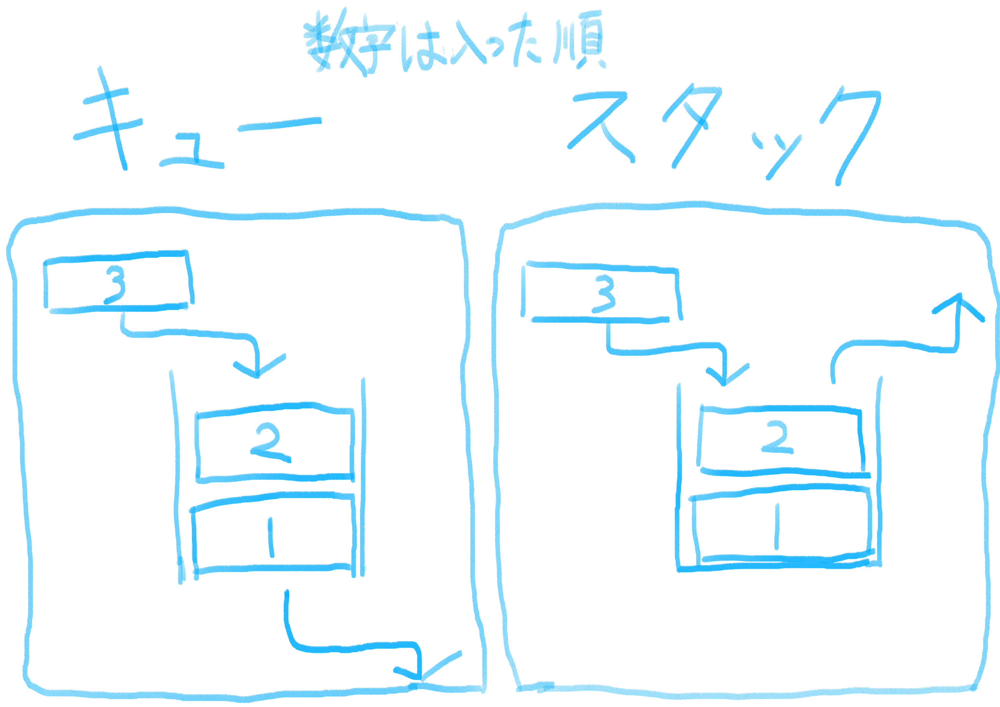
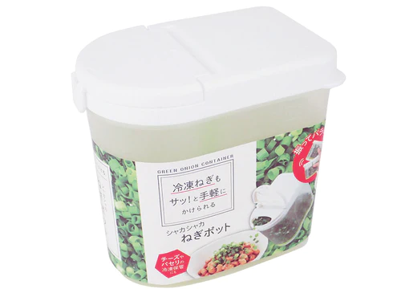
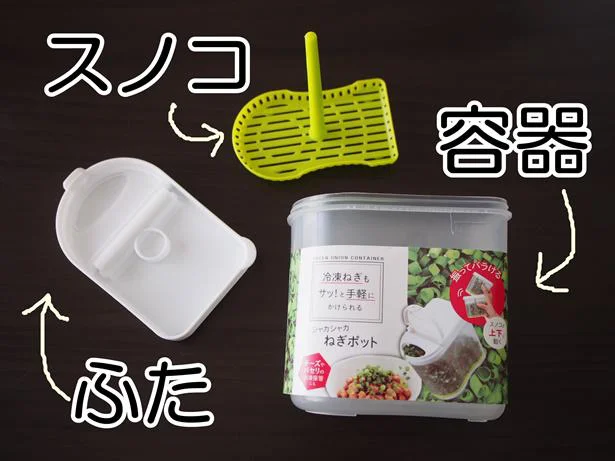

こんにちは、ザクザク食感です。
ネギって美味しすぎる。
基本的にどんな料理にかけても美味しい。
丸亀製麺に行ったらうどんが見えなくなるくらいネギかけちゃうし、しゃぶ葉の香味野菜もいつも山盛り取っちゃいます。
本当に一生食べていたいので、家の冷蔵庫には常にネギと焼いたナスをポン酢に漬けたやつを常備しています。
ナスを適当に焼いて、ネギは白髪ネギにして火を通さずにポン酢に漬けておくとシャキシャキして美味しいです。
さて、これをつくると当然ネギの青い部分が余ってしまいます。
鶏むね肉を煮るときにお酒の代わりに入れてもいいけれど、ふにゃふにゃになったネギは食べる気になれないので、全部刻んでタッパーに入れて冷凍保存しています。
これだと期限を気にせず無駄なく使えるし、豆腐や納豆に大量にかけて食べるのが好きなので、とても重宝しています。
ですが、この保存法にはひとつだけ問題があります。
それが、「ひとつの容器でネギを保存しようとすると最初に入れたネギをなかなか使えない」ということです。
「ちっちゃいタッパーをたくさん買って、ネギの青い部分が残るたびに別のタッパーに入れたらいいじゃん！」と思う方もいらっしゃるかもしれません。
ですが、タッパーって意外とかさばるし、今あるタッパーだけでちょうどサイクルが回っているので、ネギを保存しておくのは大きいタッパーひとつで完結させたいです。
「キュー」「スタック」という言葉があります。
キューは先入れ先出し、スタックは先入れ後出しのことです。
図にすると以下のようになります。

3回ネギを補填して1回ネギを使ったとすると、キューなら一番古いネギを使えますが、スタックだと一番新しいネギを使うことになります。
つまり、今の僕の保存法だとネギをスタックに入れているということです。
小ネギや万能ネギならまだいいですが、普通のネギはいくら洗ってもなんか汚れていそうな気がするので、なるべく古いものから使いたいです。
このキューの容器が欲しい……でもそんなの見たことありません。
ですが、先日ゴミ袋を買いにダイソーに行ったとき、ある商品に出会いました。

ここから商品ページに飛べます(https://jp.daisonet.com/products/4905687193891)
遠くから商品が見えたので、「冷凍ねぎ」「サッと手軽に」という文字が目につきました。
えっ！？もしかして冷凍ネギ専用の容器！！？さすがダイソー！！！
一目散に棚に向かい、商品をよく見てみました。

引用させていただいたページ(https://www.lettuceclub.net/weblettuce/article/1020739/)
↑このページを見ればどういう商品なのか分かると思います
いやスタックやないかい！！！！！
これに入れてネギを冷凍すると、冷凍されたネギがくっつきづらくなるという商品でした……
ダイソーさん見てますか、蓋が上下についてる冷凍ネギ入れの商品化もぜひご検討ください！！！！！
ちなみに、ネギをタッパーに入れた後、キッチンペーパーで落し蓋をしてからタッパーの蓋を閉めて、蓋が下になるようにして冷凍保存すると、水分がキッチンペーパーに吸われるのでネギがくっつかなくなります。
お試しください。
それでは、さようなら。